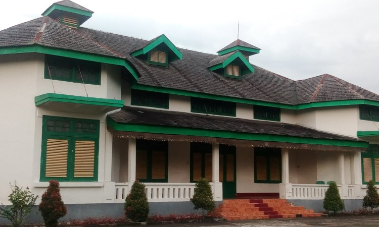

Museum ini dahulu merupakan istana Raja Luwu yang dibangun sekitar tahun 1920. Setelah tidak ditempati lagi, bangunan dijadikan museum dan diberi nama Museum Batara Guru pada tanggal 26 Juli 1971. Adapun peresmiannya dilakukan oleh Andi Achmad, salah seorang ahli waris Raja Luwu yang saat itu menjabat sebagai Bupati Luwu. Tujuan pendiriannya, adalah untuk melestarikan budaya Kerajaan Luwu agar dapat diwariskan pada generasi berikutnya.
Museum Batara Guru memiliki luas tanah sekitar 10.000 meter persegi yang di dalamnya terdapat sebuah bangunan berukuran sekitar 968 meter persegi. Di dalam bangunan itu terdapat sebuah ruang pamer seluas 120 meter persegi, ruang administrasi, ruang perpustakaan, mushola dan juga toilet. Ruang pamer museum menyimpan sekitar 831 buah koleksi, terdiri atas koleksi prasejarah, keramik, heraldika, etnografi, naskah, numismatik, dan foto-foto. Sebagai catatan, apabila berniat menyaksikan ke-831 koleksi tersebut Museum Batara Guru dapat dikunjungi pada hari Selasa, Rabu, Kamis, Jumat dan Minggu dengan perincian: Selasa-Kamis dan Minggu pukul 08.00-16.00 WITA, sedangkan Jumat pukul 08.00-10.30 WITA. Khusus untuk hari Senin dan Sabtu museum ditutup untuk umum.
 Museum Batara Guru diresmikan pada tanggal 26 Juli 1971 oleh Bupati Luwu saat itu, Andi Achmad. Beliau adalah salah seorang ahli waris dari Raja Luwu. Tujuan didirikannya museum ini adalah untuk melestarikan warisan budaya Kerajaan Luwu agar dapat diwariskan pada generasi berikutnya.
Gedung museum Batara Guru yang didirikan pada tahun 1920 ini merupakan bekas IstanaRaja Luwu. Museum Batara Guru mempunyai koleksi sebanyak 831 yang terdiri dari koleksi prasejarah, heraldik, keramik, etnografi, naskah, numismatik, dan foto.